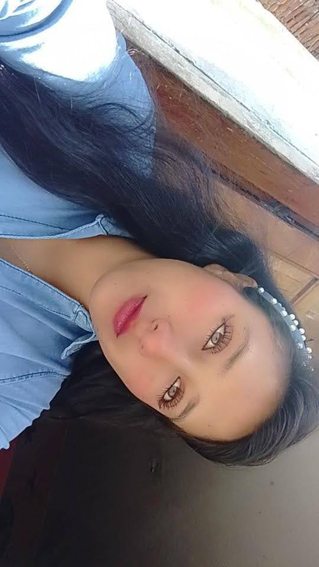

JUNTOS,
Viajamos al infinito
▶️
Un regalo especial para mi persona favorita💛
Pulsa para abrir.
💛🌼 Abrir mi regalo

Te Amo
¿Estás segura/o de abrir tu regalo?
Con mucho amor mi meloncito 🐥✨
Cancelar
Sí, abrir 💛